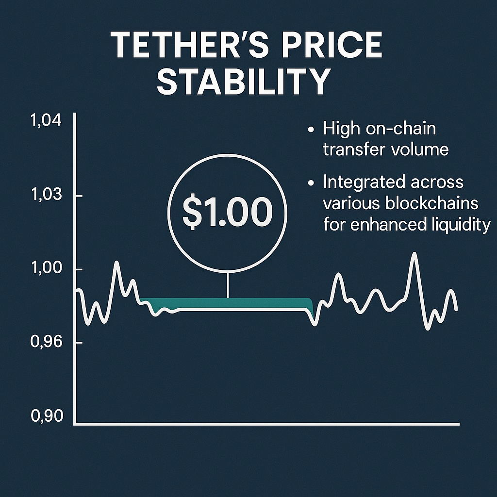

Tether (USDT) Forecast for the End of 2025: Comprehensive Analysis
The material in this article is provided for educational purposes only and should not be considered financial advice. Investing in cryptocurrencies carries high risk.
Introduction
Tether (USDT) is the largest stablecoin pegged 1:1 to the US dollar. Issued by Tether Limited, it is backed by reserves in dollars, Treasury bonds, and other assets. USDT serves as "digital cash" for trading, hedging, and cross-chain transfers, with a daily transaction volume of over $75 billion. Issued on 13 blockchains, including Ethereum and Tron, USDT accounts for ~68% of the stablecoin market. coinlaw.io

Current Market Situation
As of August 2025, USDT has a market capitalization of ~$104 billion (circulating supply ~104 billion tokens). Its market share among stablecoins is ~68%, ahead of USDC (~22%). USDT dominates DeFi and exchanges, accounting for ~70% of DEX trades. Tether publishes quarterly reserve attestations, but transparency concerns remain. Core blockchains are Ethereum and Tron, with new integrations on Avalanche, Polkadot, NEAR, and others. coinlaw.io
Key Events of 2025
- Regulation: The GENIUS Act (USA, July 2025) requires 100% backing with liquid assets and monthly reporting. Tether is restructuring reserves, replacing gold with Treasuries. coinlaw.io
- Reserves: Over 90% of the portfolio consists of Treasuries (~$91 billion), ~$5–6 billion in crypto assets. Excess reserves ~ $6.3 billion (2024). coinlaw.io
- Compatibility: Tether discontinued support for Omni Layer, Bitcoin Cash SLP, Kusama, EOS, Algorand as of September 1, 2025. New networks: Avalanche, Polkadot, NEAR, TON, Celo, Solana. coinmarketcap.com
- Regulatory steps: Tether exited operations under MiCA (EU), losing its license. In the US, transparency has been strengthened under the GENIUS Act. coinmarketcap.com
Risks and Limiting Factors
- Regulatory risks: Non-compliance with the GENIUS Act or other rules could lead to a US ban on USDT. Loss of license in the EU (MiCA) reduced market coverage. coinmarketcap.com
- Reserve transparency: ~$10 billion in loans and ~$8.9 billion in BTC raise concerns. Semi-annual audits (BDO) are not sufficient for full trust. coinmarketcap.com
- Competition: USDC, FDUSD, DAI/USDS, and CBDCs (digital yuan, euro) threaten USDT’s market share. coinlaw.io
- Interest rate risks: Heavy exposure to Treasuries (~$127 billion) makes Tether vulnerable to interest rate changes and market corrections. coinmarketcap.com
Scenarios for the End of 2025
- Maintaining dominance: Full compliance with the GENIUS Act will strengthen trust. USDT will retain ~60–68% of the market, supporting demand in DeFi and trading. coinmarketcap.com
- Loss of confidence: Issues with reserves or audits could cut USDT’s share below 60%, with outflows toward USDC or CBDCs. coinmarketcap.com
- Increased oversight: Stricter regulations may reduce profitability but improve peg stability. USDT adapts via monthly audits. coinlaw.io
- Growing adoption: Demand for stablecoins in Asia and the Middle East will boost USDT turnover, especially on new blockchains and DeFi. coinlaw.io
USDT will remain pegged at ~$1, with possible short-term deviations (±0.5–1%) during market turbulence.
Conclusion
By the end of 2025, Tether (USDT) will remain the leading stablecoin with a capitalization of ~$104 billion and a ~60–68% market share, provided it complies with the GENIUS Act and improves reserve transparency. Key drivers: high demand in DeFi, trading, and new blockchains (Avalanche, TON, Solana). Risks: regulatory restrictions, competition from USDC and CBDCs, and reserve concerns. USDT will maintain its ~$1 peg with minimal deviations. Investors should monitor monthly audits, regulatory updates, and the growth of competing stablecoins. For more details, visit coinmarketcap.com and coinlaw.io.